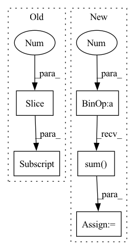

Pattern ID :8574
Before Change
return predictions
def get_loss(self, x):
predictions = self(x[:, :-1] )
loss = F.cross_entropy(predictions.reshape(-1, predictions.shape[-1]), x[:, 1:].reshape(-1))
accuracy = (torch.argmax(predictions[:, -1, :], dim=-1) == x[:, -1]).float().mean()
return loss, {"loss": (loss.item(), x.shape[0]*(x.shape[1]-1)), "accuracy": (accuracy.item(), x.shape[0])}After Change
// print(torch.argmax(predictions[:, -1, :], dim=-1), x[:, -1])
loss = F.cross_entropy(predictions[:, -1, :], y)
accuracy = (torch.argmax(predictions[:, -1, :], dim=-1) == y).float().mean()
attn_entropies = sum([-(attn * torch.log(attn+1e-7)).sum(dim=-1) .mean().item() for attn in attns]) / len(attns)
param_norm = parameter_norm(self)
return loss, {"loss": (loss.item(), x.shape[0]), "accuracy": (accuracy.item(), x.shape[0]),
"attn_entropy": (attn_entropies, len(attns)*x.shape[0]*(x.shape[1]-1)), "param_norm": (param_norm, 1)}In pattern: SUPERPATTERN
Frequency: 3
Non-data size: 5
Instances Fragment ID: 29733249
Project Name: sea-snell/grokking
Commit Name: 9652db76d1cbdbe66e24e709168b12fa25ba00fc
Time: 2021-11-18
Author: sea_snell@icloud.com
File Name: grokk_replica/grokk_model.py
M Class Name: GrokkModel
N Class Name: GrokkModel
M Method Name: get_loss(3)
N Method Name: get_loss(2)
M Parent Class: nn.Module
N Parent Class: nn.Module
M File Name: grokk_replica/grokk_model.py
N File Name: grokk_replica/grokk_model.py
M Start Line: 17
M End Line: 20
N Start Line: 18
N End Line: 26
Before Change
shape = distogram.shape
n_bins = torch.ones(shape[-1] + 1) * min_t
n_bins[1:] = torch.tensor(bins)
// center - median
cum_dist = torch.cumsum(distogram, dim=-1)
central = torch.searchsorted(cum_dist, 0.5)After Change
if wide == "var":
weights = (distogram * (bins - central.unsqueeze(-1))**2).sum(dim=-1)
elif wide == "sqrt":
weights = (distogram * (bins - central.unsqueeze(-1))**2).sum(dim=-1) .sqrt()
else:
weights = torch.zeros_like(central)
// rescale to 0-1. lower std / var --> weight=1 Fragment ID: 29733248
Project Name: lucidrains/alphafold2
Commit Name: 5013886fc413e143b7f3341db644d320a11c3804
Time: 2021-01-14
Author: ericacaide1@gmail.com
File Name: utils.py
M Class Name: AnonimousClass
N Class Name: AnonimousClass
M Method Name: center_distogram_torch(5)
N Method Name: center_distogram_torch(3)
M Parent Class:
N Parent Class:
M File Name: utils.py
N File Name: utils.py
M Start Line: 119
M End Line: 130
N Start Line: 110
N End Line: 139
Before Change
// get per-coordinate sum of edges endpoints of each panel
// should be close to sum of the equvalent number of pading values (since all of coords are shifted due to normalization\standardization)
// (in case of panels, padding for edge coords should be zero, but I"m using a more generic solution here JIC)
panel_coords_sum = (predicted_panels[el_id][:seq_len, :2] - self.pad_tenzor[:2] ).sum(axis=0)
// batch mean of squared norms of per-panel final points:After Change
chosen_panel = shifted_gt_panel
for i in range(1, num_edges):
shifted_gt_panel = self._rotate_edges(shifted_gt_panel, num_edges)
dist = ((predicted_panels[el_id] - shifted_gt_panel) ** 2).sum()
if dist < min_dist:
min_dist = dist
chosen_panel = shifted_gt_panel
print(min_dist, i) Fragment ID: 29733245
Project Name: maria-korosteleva/garment-pattern-estimation
Commit Name: d5249e2d1149a36a28f875d31d10930c53b178d0
Time: 2021-04-13
Author: mariako@kaist.ac.kr
File Name: nn/metrics.py
M Class Name: PanelShapeOriginAgnosticLoss
N Class Name: PanelShapeOriginAgnosticLoss
M Method Name: __call__(3)
N Method Name: __call__(3)
M Parent Class: PanelLoopLoss
N Parent Class: PanelLoopLoss
M File Name: nn/metrics.py
N File Name: nn/metrics.py
M Start Line: 229
M End Line: 245
N Start Line: 228
N End Line: 261